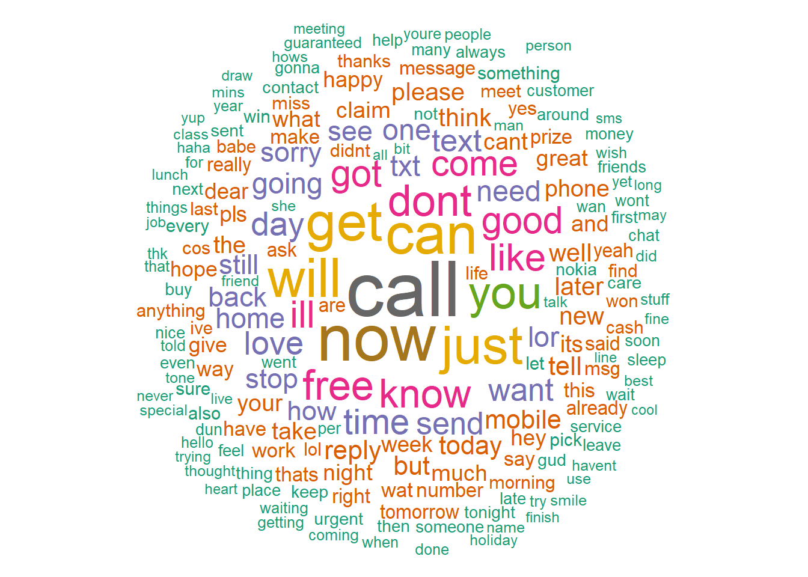

| Category | Peace | Non_violent | Violent | Civil_War | Total |
|---|---|---|---|---|---|
| Bust | 0.40 | 0.20 | 0.160 | 0.040 | 0.8 |
| Boom | 0.16 | 0.03 | 0.006 | 0.004 | 0.2 |
| Total | 0.56 | 0.23 | 0.166 | 0.044 | 1.0 |
3 Naive Bayes
In a scientific research, we cannot prove our theoretical model is true. However, we can investigate what is the probablity that our theoretical model is not true. To measure and quantify this uncertainty, we employ probability theorem and statistics.
3.1 A Brief Introduction to Probability Theory
In social science, we are interested in studying the variations in one, sometime a set of, outcome across time and/or location: inter-state war, civil war, housing price, gender inequality, election results, and so forth. We often show this outcome variable, aka dependent variable, with \(Y\). Roughly speaking, a theory/hypothesis/proposition explain the association between the outcome variable \(Y\) with another random variable that is called explanatory variable, aka independent variable, exogenous variable, and feature, and is often shown by \(X\).
Virtually, all statistical methods employed by social scientists aims to find and explain what is the probability of observing a specific outcome \(Y=y\) given a specific value of independent variable \(X=x\). We can write this as: \(P(Y=y|X=x)\). Some simply write this as \(P(y|x)\). As you will see in this course, and you might saw it in your other advanced methods course, the statistical techniques and algorithms that we use can be mainly divided to two groups based on whether \(Y\) is continuous or discrete/categorical. The latter one is often called classification question. (note: do not mix classification with clustering. These are two different types of problems. We will discuss clustering in the final sessions of this course.)
The common practice in studying \(P(Y=y|X=x)\) directly by making an assumption about the functional form of the association between \(Y\) and \(X\). For instance, in linear regression models such as OLS, we assume that the association between \(Y\) and \(X\) is linear: \(y=\alpha+\beta x+\epsilon\). That said, you do not have to use probability models to develop a statistical learning model. You also can develop an algorithm and explore its performance. In fact, you can develop any algorithm you want, but you need to show that it works. \(k\) nearest neighbors (kNN) is one of these algorithms that does not need any probability model; we will cover kNN in this course. There is also another approach to study \(P(Y=y|X=x)\) using the Bayes Theorem, which is the topic of this session.
We will first briefly review very basic probability notations and concepts, then will learn the Bayes Theorem, and finally will study the Naive Bayes algorithm.
3.1.1 Discrete Random Variables
We are uncertain about the value of a random variable. Thus, we use a (statistical) distribution to describe it. A discrete random variable can only take a countable number of values, and a probability distribution shows the probability of realization of each value/outcome. For example, if we toss a fair coin twice, then the distribution of the number of heads (X) can be written as follow:
| \(X\) | \(P(X=x)\) |
|---|---|
| \(0\) | \(.25\) |
| \(1\) | \(.5\) |
| \(2\) | \(.25\) |
Question: What is \(P(X \geq 1)\)? What is \(P(X > 1)\)?
3.1.2 Probability mass/denisty function and cumulative denisty function
\(f(x)=P(X=x)\) is known as the probability mass function (PMF) when \(X\) is discrete, and the probability density function (PDF) when \(X\) is continuous. Also, the cumulative density function (CDF) is
\[F(x)=\sum_{k\leq x}f(k)~~if~~x \in \mathbb{Z}\]
and
\[F(x)=\int_{k\leq x}f(k)~~if~~x \in \mathbb{R}.\]
Some of the commonly used distributions are \(X\sim N(\mu,\sigma)\), \(X\sim Bernoulli(p)\), and \(X\sim Poisson(\lambda)\).
3.1.3 Conditional, joint, and marginal distributions
- Joint (Probability) Distribution: Probability of observing two (or more) outcomes together is measured using joint probability distribution written as: \(P(X=x, Y=y)\). Of course, it can be extended to more than two outcomes:
\[P(X_1=x_1,X_2=x_2,\dots,X_N=x_N)\].
- Conditional (Probability) Distribution: Intuitively, this means how knowing the values/outcomes of some variables affect our understanding about the values/outcomes of other variables. The simplest version of it for a two-variable case is P(Y=y|X=x), and the extended version of it is:
\[P(Y_1=y_1,Y=y_2,...,Y_L=y_L|X_1=x_1,X_2=x_2,\dots,X_M=x_M).\]
Suppose that we are interested in modeling the type of contentious politics,\(\{0=Peace, 1=Nonviolent~Protests, 2=Violent~Protests, 3=Civil~War\}\), in The Republic of Gilead1 next year given the economic condition. For the sake of simplicity assume that there are two economic conditions: boom and bust.
| \(S\) | \(P(S=s\|C=boom)\) | \(S\) | \(P(S=s\|C=bust)\) |
|---|---|---|---|
| Peace | \(.80\) | Peace | \(.50\) |
| Nonviolent Protests | \(.15\) | Nonviolent Protests | \(.25\) |
| Violent Protests | \(.03\) | Violent Protests | \(.20\) |
| Civil war | \(.02\) | Civil war | \(.05\) |
We read P(S=Violent protests|E=bust)=.20: The probability/likelihood of “Violent protests” (S=Violent protests) conditional on/given a bad economy(C=bust) is \(.20\).

There are eight outcomes whose probabilities are conditional on the economic conditions:
| \((C, S)\) | \(P(S=s, C=c)\) |
|---|---|
| \((Boom, Peace)\) | \(.16\) |
| \((Boom, Nonviolent)\) | \(.07\) |
| \((Boom, Violent)\) | \(.006\) |
| \((Boom, Civil~War)\) | \(.004\) |
| \((Bust, Peace)\) | \(.4\) |
| \((Bust, Nonviolent)\) | \(.2\) |
| \((Bust, Violent)\) | \(.16\) |
| \((Bust, Civil~War)\) | \(.04\) |
3.2 Bayes’ Theorem
We are interested in finding \(P(y|x)\), and the common practice by frequentist statisticians is assuming a functional form for the association between \(x\) and \(y\), and then estimating the parameters of the function using different methods such as OLS, MLE, and so forth. However, there is another approach based on Bayes’ Theorem:
\[\begin{align} P(y|x)=\frac{P(x,y)}{p(x)}=\frac{P(x,y)}{\sum_y p(x,y)}=\frac{p(y)p(x|y)}{\sum_y p(y)p(x|y)} \end{align}\]
In other words, we can say Bayes’ Theorem suggest computing \(P(y|x)\) from \(P(y)\) and \(P(x|y)\).
Picnic Day Example: Assume that you are planning to go out for a picnic today. However, you find that the weather is cloudy when you wake up. 50% of rainy days start off cloudy. However, cloudy days are common in your city. 40% of days start cloudy. Further, season it is a dry month, you know that in average 3 of 30 days end to rain, i.e. 10%. The question is what is the likelihood of raining today when it starts cloudy/
Solution:
\[\begin{align} P(Rain|Cloud)=\frac{P(Cloud|Rain) P(Rain)}{P(Cloud)} = \frac{.1 \times .5}{.4}=.125=12.5\% \end{align}\]
Question: What is the posterior odds ratio if \(y={0,1}\)?
3.2.1 Extending Bayes’ Theorem to more than two variables
Often, we face a question which requires modeling more than two variables. We still can extend the relationship between the joint and conditional distributions to more than two variables:
\[\begin{align} P(Y_1=y_1, Y_2=y_2, Y_3=y_3)= P(Y_1=y_1) P(Y_2=y_2|Y_1=y_1) P(Y_3=y_3|Y_1=y_1, Y_2=y_2) \end{align}\]
3.2.2 Independence
Consider a set of random variables, \(\{x_1, x_2, \dots, x_k\}\). They are independent of each other if the conditional distribution of any of them is not dependent on our observation of any others.
Example: Suppose a fair coin is tossed 20 times. Let \(Y_i\) be 1 if the coin is a head at the \(i^{th}\) round, and \(0\) otherwise. What is \(P(Y_{11}=1)\)? What is \(P(Y_{11}=1|y_1=1,\dots,y_{10}=1)=?\)
If two variables are independent, the the relation between the joint and conditional distributions changes to:
\[\begin{align} P(Y=y|X=x)=P(Y=y) \end{align}\]
So,
\[\begin{align} P(Y=y|X=x)=P(Y=y)\\ P(X=x,Y=y)=P(Y=y|X=x) P(X=x)\\ =P(Y=y)P(X=x) \end{align}\]
Theorem: \(X\) and \(Y\) are independent if and only if \(P(x,y)=P(y|x)P(x)=p(y)p(x)\)
3.2.3 Identical distributions
Another common assumption in statistical analysis is that random variables are distributed identically. This means if we toss a coin 100 times, and \(Y_i=1\) and \(0\) otherwise, then \(P(Y_{30}=1)=P(Y_{85}=1)\)!
When random variables are distributed identically and independently, they are called IID distributions.
3.3 Naive Bayes Classification
Despite its other name, “Idiot’s” Bayes Classification, this method often shows a very good classification performance!
Assume that you have a categorical outcome \(Y\). As mentioned above, we are interested in finding \(P(y|x)\), that is what is the probability of \(Y\) conditional on observing \(X=x\).
For the sake of simplicity, assume that \(Y=\{0,1\}\). Then, the common practice among political scientists is estimating a logistic regression:
\[ P(y=1|x) \sim Bernoulli(p(x)), p(x)=\frac{e^{x'\beta}}{1+e^{x'\beta}} \]
where \(x=(x_1, x_2, \dots, x_p)'\) and \(\beta=(\beta_1, \beta_2, \dots, \beta_p)'\).
However, we can use Bayes Theorem to indirectly compute \(P(y|x)\). Naive Bayes classification makes a simplification assumption, which makes the name of this method naive: the elements of the features/explanatory variables of \(X=(X_1, X_2, \dots, X_p)\) are conditionally independent given Y:
\[ p(Y=y|X=x)=\frac{p(X=x|Y=y)p(Y=y)}{p(X=x)} \] For continuous \(x\), we can re-write:
\[ p(Y=k|X=x)=\frac{\pi_k f_k(x)}{\sum_{l=1}^k f_l(x)} \]
Getting back to the discrete model; for a problem with \(X=(X_1, X_2, \dots, X_p)\), we have:
\[ p(Y=y|X=x)=\frac{p(\{x_1, x_2, \dots, x_p \}|Y=y)p(Y=y)}{p(X=x)} \]
Naive Bayes assumes that \(p(\{x_1, x_2, \dots, x_p \}|Y=y)=\prod_i p(x_i|y)\). Thus,
\[ p(y|x) \propto p(y)\prod_i p(x_i|y) \]
What is the interpretation of the above formula?
3.4 An example: Spam or Ham?
Content and sentiment analysis involve understanding the communicated messages in a text using computational methods. Indeed, the plan is to use a statistical model to train an algorithm to read, process, and analyze the text. Every word in a piece of text can add information about its intended message, tone, and sentiment.
Here, we do a simple analysis of short message texts to categorize them to Spam and Ham. In this example, we use the Bag of Words method which does not consider the order of words, which contain information as well. However, surprisingly, this naive method is still a powerful too, as you see below.
In the Bag of Words, also known as BoW, method, these below texts are considered identical:
Sentence 1: There will be a presentation on Machine Learning in the school of management
Sentence 2: Learning will be a on Machine management in the school of There presentation.
Let’s now do the coding part:
## Loading the data of the web
smsData=read.csv("https://raw.githubusercontent.com/babakrezaee/MethodsCourses/master/DataSets/sms_spam.csv", stringsAsFactors = FALSE, encoding="UTF-8")## Let's take a look at the first few observations
head(smsData) type
1 ham
2 ham
3 ham
4 spam
5 spam
6 ham
text
1 Hope you are having a good week. Just checking in
2 K..give back my thanks.
3 Am also doing in cbe only. But have to pay.
4 complimentary 4 STAR Ibiza Holiday or £10,000 cash needs your URGENT collection. 09066364349 NOW from Landline not to lose out! Box434SK38WP150PPM18+
5 okmail: Dear Dave this is your final notice to collect your 4* Tenerife Holiday or #5000 CASH award! Call 09061743806 from landline. TCs SAE Box326 CW25WX 150ppm
6 Aiya we discuss later lar... Pick u up at 4 is it?summary(smsData$type) Length Class Mode
5559 character character is.factor(smsData$type)[1] FALSE# We need to change the data type for "type" from text to factor
smsData$type=factor(smsData$type)
# Let's look at the data now:
summary(smsData$type) ham spam
4812 747 plot(smsData$type)is.factor(smsData$type)[1] TRUEdim(smsData)[1] 5559 2names(smsData)[1] "type" "text"smsData$type[1:5][1] ham ham ham spam spam
Levels: ham spamsmsData$text[1:5][1] "Hope you are having a good week. Just checking in"
[2] "K..give back my thanks."
[3] "Am also doing in cbe only. But have to pay."
[4] "complimentary 4 STAR Ibiza Holiday or £10,000 cash needs your URGENT collection. 09066364349 NOW from Landline not to lose out! Box434SK38WP150PPM18+"
[5] "okmail: Dear Dave this is your final notice to collect your 4* Tenerife Holiday or #5000 CASH award! Call 09061743806 from landline. TCs SAE Box326 CW25WX 150ppm"In this question, the outcome variable is \(y=type\), and the feature is \(x=text\). We can check the frequency of words in the texts:
library(wordcloud)
wordcloud(smsData$text, min.freq = 1,
max.words=200, random.order=FALSE, rot.per=0,
colors=brewer.pal(8, "Dark2"))
3.5 Cleaning up the data
We need to prepare a corpus of texts, and the corpus needs some cleaning up.
library(tm)
library(SnowballC)
smsCorpus=VCorpus(VectorSource(smsData$text))
smsCl=tm_map(smsCorpus,content_transformer(tolower)) # Change all words from upper to lower letters
smsCl=tm_map(smsCl, removeNumbers)
smsCl=tm_map(smsCl, removeWords, stopwords())
smsCl=tm_map(smsCl, removePunctuation)
smsCl=tm_map(smsCl, stemDocument)
smsCl=tm_map(smsCl, stripWhitespace)Now, we can check how the data turned out:
smsData$text[1][1] "Hope you are having a good week. Just checking in"smsCl[[1]]$content[1] "hope good week just check"The next step is creating a Document Term Matrix:
smsDTM=DocumentTermMatrix(smsCl)
dim(smsDTM)[1] 5559 6559print(as.matrix(smsDTM[100:110,100:110])) Terms
Docs admiss admit ador adp adress adrian adrink adsens adult advanc adventur
100 0 0 0 0 0 0 0 0 0 0 0
101 0 0 0 0 0 0 0 0 0 0 0
102 0 0 0 0 0 0 0 0 0 0 0
103 0 0 0 0 0 0 0 0 0 0 0
104 0 0 0 0 0 0 0 0 0 0 0
105 0 0 0 0 0 0 0 0 0 0 0
106 0 0 0 0 0 0 0 0 0 0 0
107 0 0 0 0 0 0 0 0 0 0 0
108 0 0 0 0 0 0 0 0 0 0 0
109 0 0 0 0 0 0 0 0 0 0 0
110 0 0 0 0 0 0 0 0 0 0 0You can check the frequent terms in the document as follow. In the example below, we want to find words that occur at least ten times:
findFreqTerms(smsDTM, lowfreq = 100) [1] "ask" "back" "call" "can" "claim" "come" "day" "dear"
[9] "dont" "free" "friend" "get" "give" "good" "got" "great"
[17] "happi" "hey" "home" "hope" "just" "know" "later" "like"
[25] "lor" "love" "make" "meet" "messag" "miss" "mobil" "much"
[33] "need" "new" "night" "now" "number" "one" "phone" "pleas"
[41] "pls" "repli" "say" "see" "send" "sorri" "still" "stop"
[49] "take" "tell" "text" "thank" "thing" "think" "time" "today"
[57] "tri" "txt" "wait" "want" "wat" "way" "week" "well"
[65] "will" "work" 3.6 Splitting Data into Train and Test
We divide the data to train and test sub-samples. We first train our algorithm using the train data, then we will evaluate its classifying power on the test data. We learned about cross-validation last session, but let’s for now do a simple one for the sake of training. There will be later assignments for you to explore how this can be done usng cross-vlidation method.
smsTrain=smsDTM[1:4000,]
smsTest=smsDTM[4001:5559,]
smsTrainY=smsData[1:4000,]$type
smsTestY=smsData[4001:5559,]$type
cat("Training fraction is ",round((4000/5559)*100,2),"% \n")Training fraction is 71.96 % As we saw above, there are many words that are repeated in the texts a few times. I will drop all words with frequency of less than 7 times over all texts.
smsWordsFreq=findFreqTerms(smsTrain,7) # Words with freq >=7
smsFreqTrain=smsTrain[,smsWordsFreq]
smsFreqTest=smsTest[,smsWordsFreq]convertCounts <-function(x){
x<-ifelse(x>0, "Yes", "No")
}
# apply() convert_counts() to columns of train/test data
smsTrain=apply(smsFreqTrain, MARGIN = 2, convertCounts)
smsTest=apply(smsFreqTest,MARGIN = 2, convertCounts)Now, let’s check the final version of the prepared data:
dim(smsTrain)[1] 4000 845is.matrix(smsTrain)[1] TRUEsmsTrain[10:12,1:10] Terms
Docs abl abt accept account across activ actual add address admir
10 "No" "No" "No" "No" "No" "No" "No" "No" "No" "No"
11 "No" "No" "No" "No" "No" "No" "No" "No" "No" "No"
12 "No" "No" "No" "No" "No" "No" "No" "No" "No" "No" 3.7 Naive Bayes and Missclassification
Now, we are finally ready to do Naive Bayes classification using \({\tt e1071}\) \(\mathcal{R}\) package.
library(e1071)
smsNB=naiveBayes(smsTrain,smsTrainY, laplace=1)
yhat=predict(smsNB,smsTest)
ctab=table(yhat,smsTestY)
ctab smsTestY
yhat ham spam
ham 1333 19
spam 19 188missClass=1-(sum(ctab)-sum(diag(ctab)))/sum(ctab)
perSpam=ctab[2,2]/sum(ctab[,2])
cat("Missclassification and Spam classification rate",round(missClass,2),"% and ",round(perSpam,2),"%, respectively \n")Missclassification and Spam classification rate 0.98 % and 0.91 %, respectively 3.8 The caret Package: A Streamlined Approach to Training Algorithms
The caret (Classification and Regression Training) package is one of the most widely used R packages for training machine learning algorithms. It simplifies the process by providing a unified framework for exploring, training, and validating predictive models across a wide range of algorithms.
In the previous section, our trained algorithm was not cross-validated, meaning its parameters were not optimized for the highest out-of-sample prediction power. By using caret, we can systematically tune our model to improve its generalization performance.
3.8.1 Instructions
- Carefully review the complete code below to get an overall understanding of its workflow.
- Run the code line by line in R.
- For the in-class assignment, submit an annotated R script where you explain what each line of code does.
- Use inline comments (preceded by
#) to provide explanations. - Example:
- Use inline comments (preceded by
print('Hello, students!') # This line prints a text message to the console.[1] "Hello, students!"Now, here is the code for training a cross-validated Naïve Bayes algorithm using the same Ham/Spam data set.
The Republic of Gilead is the fictional country name in the Handmaid’ tale Tale, Margaret Atwood, 1985.↩︎